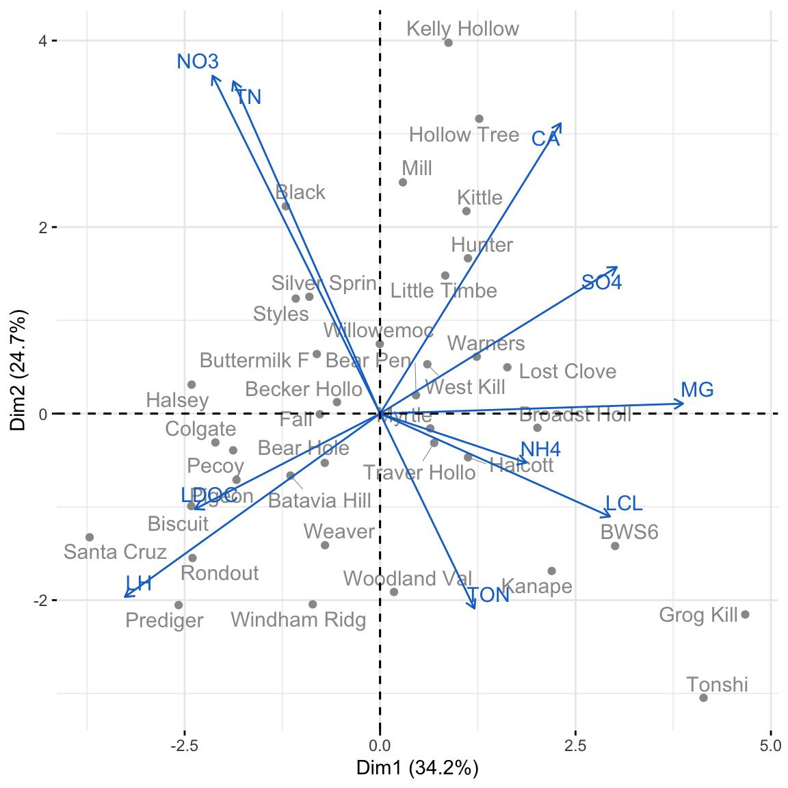

26 Week 14 Lecture
26.1 Week 14 Readings
For this week, I suggest reading Aho Sections 9.17.
There are also a suite of papers we will discuss as part of our end-of-semester review for the final exam. I suggest reading them all but I will assign you one to focus on (and present) before class: Anderson et al. (2001), Beninger et al. (2012), Borer et al. (2009), Gelman (2011), Guthery et al. (2001), Makin and Xivry (2019), and Murtaugh (2007).
26.2 What does ‘multivariate’ mean?
Multivariate data includes more than one variable recorded from each experimental unit (replicate). For example, Lovett et al. (2000) measured many water chemistry variables (e.g., concentration of nitrate, ammonia, organic N) in each of 39 streams in the Catskill Mountains.
We’ve already worked with multivariate data when we fit multiple regressions or ANOVA models with more than one factors. We will be looking into some other commonly used multivariate analyses.
26.3 Multivariate associations
We are familiar with the process of measuring variation within a variable in linear regression using sums of squares and variances (which are equivalent to scaled sums of squares). For covariate 1, \(X_1\):
\[ \text{SS} (X_1) = \sum_{i = 1}^n ( X_{1i} - \bar{X}_{1} ) ^2 \]
\[ \mathrm{Var} (X_1) = \frac{1}{n - 1} \sum_{i = 1}^n ( X_{1i} - \bar{X}_{1} ) ^2 \] With multivariate data, we also look at the covariation between variables, as the sums of cross products or the covariances. For covariates 1 and 2, \(X_1, X_2\):
\[ \text{SCP} (X_1, X_2) = \sum_{i = 1}^n ( X_{1i} - \bar{X}_{1} ) ( X_{2i} - \bar{X}_{2} ) \]
\[ \mathrm{Cov} (X_1, X_2) = \frac{1}{n - 1} \sum_{i = 1}^n ( X_{1i} - \bar{X}_{1} ) ( X_{2i} - \bar{X}_{2} ) \]
We can do this for all of our covariates and get a matrix of the sums of squares and sums of cross products or a matrix of the variances and covariances. We could also standardize the variances and covariances by their standard deviations and get a matrix of correlations (\(r\)).
For multivariate analyses, we use the matrix of associations to find linear combinations of the covariates in the original dataset. We do this in order to summarize the variation in the original data set using new derived covariates (each new covariate involves all of the original covariates). Only the first couple of the new derived covariates may explain a lot of the variation in the data, which is useful when we have a lot of covariates.
When we have \(n\) observations and \(p\) covariates, our new covariate \(z_{j}\) for observation \(j\) is:
\[z_j = c_1 X_{1j} + c_2 X_{2j} + \dots + c_p X_{pj}\]
\(c_1\) through \(c_p\) are coefficients that describe how much each original covariate contributes to the new covariate, \(z\). There will be as many new covariates \(z\) as there were original ones (\(z_{1j}, z_{2j}, \dots, z_{pj}\)).
Note that you could also calculate \(z\) and \(c\) using the original matrix of data rather than the matrix of associations (check your R package information to see which method is used).
What do we estimate in a multivariate analysis?
Each \(z_j\) (remember, there are \(p\) of these for each observation \(j\)) is called a score. The entire equation above (again, there are \(p\) of these), is called a component.
The set of coefficients for each \(z\), \(c\), are called eigenvectors. So, there are \(p\) eigenvectors, each of length \(p\). They are often scaled, depending on your multivariate method.
The total amount of variation explained by each eigenvector is called the eigenvalue, \(\lambda\). There are \(p\) eigenvalues.
The eigenvectors and eigenvalues of the \(p\) components is what we use in a principal components analysis, canonical correlaion analysis, or a correspondence analysis.
If we have data that can be grouped, we can estimate the components in order to maximize between-group differences relative to within-group differences. This is what we get out of multivariate ANOVA (MANOVA) or discriminant function analysis.
Note that if you are working with species abundances, species presence-absences, or genetic data, we might calculate the dissimilarity between observations using a dissimilarity matrix.
For example, we might have the species abundances of aquatic invertebrates sampled from 30 ponds. Each pond has different species and abundances of species. We can calculate the dissimilarity of each pond to every other pond based on the species composition of each (for example, using Bray-Curtis distance, or another metric of distance). Then, we can use a multivariate analysis to summarize the variation among all ponds. Ponds that share species and have similar abundances will be closer together in multivariate space.
library(vegan)
library(MASS)
data(varespec) # % cover of lichen spp. in 24 sites
vare.dis <- vegdist(varespec)
vare.dis## 18 15 24 27 23 19 22
## 15 0.5310021
## 24 0.6680661 0.3597783
## 27 0.5621247 0.4055610 0.4934947
## 23 0.3747078 0.3652097 0.5020306 0.4286111
## 19 0.5094738 0.4560757 0.5092318 0.4878190 0.3606242
## 22 0.6234419 0.3579517 0.5010050 0.4655224 0.4812706 0.4726483
## 16 0.5337610 0.3976674 0.5907623 0.5683930 0.4094312 0.4496731 0.2678031
## 28 0.8418209 0.5225414 0.5736665 0.3027802 0.6979519 0.6431734 0.5985666
## 13 0.3453347 0.6063846 0.7576747 0.7543736 0.6221471 0.5739244 0.6948736
## 14 0.5449810 0.4803756 0.6533606 0.7467915 0.5645808 0.6331942 0.5357609
## 20 0.3879069 0.3784188 0.4346892 0.4957833 0.2877014 0.3953776 0.4627020
## 25 0.6318891 0.3376115 0.3369098 0.5001593 0.4258617 0.4311299 0.3822981
## 7 0.3603697 0.6717391 0.7931069 0.7792917 0.6390838 0.6958570 0.7459886
## 5 0.4955699 0.7178612 0.8561753 0.8732190 0.7295255 0.7898205 0.8611451
## 6 0.3382309 0.6355122 0.7441373 0.7496935 0.6252483 0.5684030 0.7249162
## 3 0.5277480 0.7578503 0.8382119 0.8090236 0.7128798 0.5302756 0.8026152
## 4 0.4694018 0.6843974 0.8309875 0.8413800 0.7117919 0.5177604 0.8015314
## 2 0.5724092 0.8206269 0.8372551 0.7581924 0.7249869 0.5389222 0.8321464
## 9 0.6583569 0.7761039 0.7590517 0.7415898 0.6693889 0.5393143 0.7725082
## 12 0.4688038 0.6794199 0.6894538 0.6253616 0.5384762 0.4288556 0.7051751
## 10 0.6248996 0.7644564 0.7842829 0.7096540 0.6625476 0.5059910 0.7875328
## 11 0.4458523 0.4716274 0.5677373 0.6322919 0.4710280 0.3293493 0.5812219
## 21 0.5560864 0.7607281 0.7272727 0.5456001 0.4951221 0.5315894 0.6771167
## 16 28 13 14 20 25 7
## 15
## 24
## 27
## 23
## 19
## 22
## 16
## 28 0.7015360
## 13 0.5514941 0.8600122
## 14 0.4826350 0.8239667 0.5547565
## 20 0.3737797 0.6963560 0.5785542 0.5115258
## 25 0.4306058 0.6086150 0.7412605 0.5541517 0.4518556
## 7 0.6596144 0.8960202 0.4533054 0.6550830 0.5959162 0.7556726
## 5 0.7184789 0.9539592 0.5148988 0.7257681 0.7153827 0.8600858 0.3237446
## 6 0.6509879 0.9014440 0.3515673 0.6227473 0.5439118 0.7343872 0.1754713
## 3 0.6837953 0.9234485 0.4965478 0.7836661 0.6690479 0.8168684 0.5154487
## 4 0.6462648 0.9381169 0.3881748 0.6734743 0.6771854 0.8400134 0.5601721
## 2 0.7354202 0.9053213 0.5968691 0.8592489 0.6951539 0.8179089 0.6465777
## 9 0.8185866 0.8686670 0.7292530 0.8282497 0.6982486 0.7884243 0.8318435
## 12 0.6342166 0.8543167 0.5902386 0.7507074 0.5182426 0.7062564 0.6991666
## 10 0.7656598 0.9016604 0.7160439 0.8304088 0.6706349 0.7845955 0.7697453
## 11 0.5172825 0.7544064 0.4272808 0.6743277 0.4461712 0.6175930 0.5262233
## 21 0.7474559 0.7248773 0.7212772 0.8096450 0.6320431 0.7466232 0.7933350
## 5 6 3 4 2 9 12
## 15
## 24
## 27
## 23
## 19
## 22
## 16
## 28
## 13
## 14
## 20
## 25
## 7
## 5
## 6 0.3984538
## 3 0.5634432 0.4517627
## 4 0.5377506 0.4665100 0.3592689
## 2 0.7257597 0.5552754 0.2099203 0.4841145
## 9 0.9014583 0.7223126 0.3885811 0.6222340 0.2330286
## 12 0.7808641 0.5762462 0.2641851 0.4870742 0.1846147 0.2277228
## 10 0.8504191 0.6567926 0.3413378 0.5776062 0.1456729 0.1117280 0.1793368
## 11 0.5563798 0.4077948 0.3002597 0.3215966 0.4209596 0.5145260 0.3688102
## 21 0.8888316 0.6720141 0.7507773 0.7641304 0.6779661 0.5952563 0.5602137
## 10 11
## 15
## 24
## 27
## 23
## 19
## 22
## 16
## 28
## 13
## 14
## 20
## 25
## 7
## 5
## 6
## 3
## 4
## 2
## 9
## 12
## 10
## 11 0.5043578
## 21 0.6147874 0.671336326.4 Model criticism for multivariate analyses
26.4.1 Transforming your data
Just like last week, we are still looking at the linear relationships. The only difference is that now we are looking at the relationships among covariates (last week, we looked for a linear relationship between the response and the covariate). This means that we may need to transform covariates that do not have linear relationships with one another.
26.5 Standardizing your data
You may want to standardize your data (divide by the standard deviation) if the covariates are on different scales from one another, or have very different variances.
However, if the scales are comparable, leaving the data unstandardized can be informative. You may want to conduct your multivariate analyses on both standardized and unstandardized data. The default behavior in R packages is not obvious, be sure to check the help files.
26.6 Multivariate outliers
Outliers can have a lot of influence in multivariate analyses too. You can look for outliers in multivariate space (values far away from most of the density of the dataset) by calculating the Mahalanobis distances of each observation and comparing it to the null distribution (chi-square distribution with p degrees of freedom).
Other than using a different criterion to determine what points are outliers, the procedures for dealing with outliers are the same.
26.7 Brief overview of multivariate analyses
If you plan on using multivariate analyses in your work, I recommend chapters 15 through 18 in Quinn and Keough 2002 (the previous textbook for this course, available for free online through the SBU library). Multivariate analyses are much easier to implement in R than they are to understand, and Quinn and Keough give a detailed but readable overview of these methods. The goal in lecture today is to make sure that you are aware of these methods.
26.8 MANOVA and DFA
If you have two or more response variables and one or more categorical covariates, you may be tempted to fit multiple ANOVAs. Though a single ANOVA is an omnibus test that controls for Type I error, fitting multiple ANOVAs risks inflating Type I error. You could account for this using a correction for familywise error rate. However, this reduces power.
Instead, you could fit a multivariate analysis of variance (MANOVA), which fits a linear combination of the response variables in a way that maximizes the between-group to within-group variances. Discriminant function analysis uses the same methods, but the goal is instead to predict group membership.
26.9 Scaling or ordination techniques
The goals of these types of analyses (principal components analysis, correspondence analysis, canonical correspondence analysis, multidimensional scaling) are (1) to reduce a large set of covariates to a smaller number of derived covariates, and (2) to reveal patterns in the data in multidimensional space. We will only be able to go over PCA today, but the other methods are covered in Quinn and Keough (2002).
# example of MDS using lichen data by site
vare.mds0 <- isoMDS(vare.dis, trace = FALSE)
ordiplot(vare.mds0, type = "t")
26.10 Principal components analysis (PCA)
The goal of PCA is to reduce a set of variables to a smaller set that captures most of the variability in your data. Mathematically, PCA represents a transformation of your original axes to a new set of orthogonal axes which are ordered in terms of how much variation they explain (the \(z\) components from before). Each axis is called a principal component (PC). You will have as many PCs as you have covariates.
The first principal component (PC1) is the axis which explains the most variation in the data. PC2 is the axis which is orthogonal (perpendicular) to PC1 and explains the next greatest amount of remaining variation. PC3 the axis orthogonal to both PC1 and PC2 and explains the next greatest amount of remaining variation, etc.
26.11 Principal components analysis (PCA)
Using the example I described at the beginning of the lecture, Lovett et al. (2000) measured water chemistry variables in each of 39 streams in the Catskill Mountains. Lovett and colleagues looked at each covariate and decided to log transform dissolved organic C, Cl, and H.
streams.init <- read.csv("_data/lovett2.csv")
streams <- streams.init[, c(6:8, 16, 9, 11, 17, 13, 14, 18)]
row.names(streams) <- streams.init[, 1]
str(streams)## 'data.frame': 38 obs. of 10 variables:
## $ NO3 : num 24.2 25.4 29.7 22.1 13.1 27.5 28.1 31.2 22.6 35.9 ...
## $ TON : num 5.6 4.9 4.4 6.1 5.7 3 4.7 5.4 3.1 4.9 ...
## $ TN : num 29.9 30.3 33 28.3 17.6 30.8 32.8 37.1 26 39.8 ...
## $ LDOC: num 2.26 2.04 2.02 1.93 1.92 ...
## $ NH4 : num 0.8 1.4 0.8 1.4 0.6 1.1 1.4 2.5 3.1 1.4 ...
## $ SO4 : num 50.6 55.4 56.5 57.5 58.3 63 66.5 64.5 63.4 58.4 ...
## $ LCL : num 1.19 1.21 1.23 1.23 1.26 ...
## $ CA : num 54.7 58.4 65.9 59.5 54.6 68.5 84.6 73.1 71.1 91.2 ...
## $ MG : num 14.4 17 19.6 19.5 21.9 22.4 26.2 25.4 21.8 22.2 ...
## $ LH : num -0.319 -0.62 -0.328 -0.638 -0.432 ...Some of the covariates are correlated, and would be collinear in a regression. The components from a PCA are orthogonal, removing multicollinearity.

26.12 PCA in R
We can fit a PCA using prcomp(). There are a lot of functions for PCAs, carefully read the help files to understand how the function is fitting the PCA before using in your own analyses.
The variances of the water chemistry covariates are very variable. It is probably best if we scale our data with the argument scale = TRUE (note this is not the default in R!).
## NO3 TON TN LDOC NH4 SO4
## 74.18850640 1.63670697 65.60399004 0.02144044 0.53607397 27.24332859
## LCL CA MG LH
## 0.02407754 194.74177098 26.24953058 0.08566604We can look at our eigenvalues in R using summary(). The square root of the eigenvalue is labeled Standard deviation. We can also see the proportion of variation explained in each component (labeled Proportion of Variance).
## Importance of components:
## PC1 PC2 PC3 PC4 PC5 PC6 PC7
## Standard deviation 1.8504 1.5725 1.0822 0.96516 0.86381 0.80397 0.61930
## Proportion of Variance 0.3424 0.2473 0.1171 0.09315 0.07462 0.06464 0.03835
## Cumulative Proportion 0.3424 0.5897 0.7068 0.79995 0.87456 0.93920 0.97755
## PC8 PC9 PC10
## Standard deviation 0.36161 0.30237 0.04784
## Proportion of Variance 0.01308 0.00914 0.00023
## Cumulative Proportion 0.99063 0.99977 1.00000We have as many eigenvalues as covariates (10). PC1 explains 34% of the variation in the data, PC2 explains 25%, and PC3 explains 12%. So, we can use just the first three components to describe over 70% of the total variance in the data.
We can look at PC1 more closely by looking at the eigenvectors, or the vector of the coefficients of the component equation. The further away each coefficient is from 0, the greater contribution that variable makes to the component.
\[z_j = c_1 (\text{NO}_3)_j + c_2 (\text{total organic N})_j + c_3 (\text{total N})_j + \\ c_4 (\text{NH}_4)_j + c_5 (\text{log dis. organic C})_j + c_6 (\text{SO}_4)_j \\ c_7 (\text{log Cl})_j + c_8 (\text{Ca})_j + c_9 (\text{Mg})_j + c_{10} (\text{log H})_j\]
## NO3 TON TN LDOC NH4 SO4 LCL CA MG LH
## -0.26 0.15 -0.23 -0.29 0.23 0.37 0.36 0.28 0.47 -0.40Large values of PC1 are associated with having higher Mg, higher log Cl, higher S04, and lower log H.
We can visualize our PCA using either the biplot() function in base R or fviz_pca_biplot() in the package factoextra.
library(factoextra)
fviz_pca_biplot(pca.streams, axes = c(1, 2), repel = TRUE,
col.var = "dodgerblue3", col.ind = "gray60", title = NULL)
The coordinates of each stream \(j\) are equal to the scores \(z_j\) for PC1 and PC2 (\(z_{1j}, z_{2j}\)).
## PC1 PC2
## Santa Cruz -3.7157577 -1.3260985
## Colgate -2.1068761 -0.3092199
## Halsey -2.4108484 0.3108805
## Batavia Hill -1.1467251 -0.6644800
## Windham Ridg -0.8618198 -2.0450124The vectors are proportional to the eigenvectors, or the contribution of each covariate to the component.
## PC1 PC2
## NO3 -0.2608012 0.51882617
## TON 0.1470633 -0.29927264
## TN -0.2284551 0.51019471
## LDOC -0.2882753 -0.14662403
## NH4 0.2279503 -0.07531484
## SO4 0.3684647 0.22497994
## LCL 0.3578632 -0.15795720
## CA 0.2811469 0.44581193
## MG 0.4716302 0.01538673
## LH -0.3972261 -0.28148575It is possible to fit linear regression in which the covariates are principal components from a PCA. This way, the covariates are not collinear. The problem is that the regression coefficients are particularly difficult to interpret. However, if you have a PCA with easily interpretable eigenvectors, this might be a useful method.
Additionally, be aware that the components that explain most of the variance in the covariates may not explain the variation in the response variable.
26.13 Missing data
In large, multivariate data sets, you may have observations that are missing values for some of the covariates. We saw this in lab last week.
mammal <- read.csv("_data/MammalLifeHistory.csv",header=T)
carnivore.init <- mammal[which(mammal$Order == "Carnivora"), ]
carnivore.init$AFR[1:12]## [1] 24.00 NA 12.00 10.50 12.00 10.50 NA 12.00 NA NA NA 16.81Last week, we removed the entire row for observations with one or more missing values for covariates. This is the default behavior in R, for example, when fitting multiple regressions with lm(). However, this is throwing away all of the information we do have for the observation.
26.14 Imputing missing data
In problem set 13, you were asked to impute missing data by sampling with replacement from the nonmissing data. There are other ways of dealing with missing data too.
You could replace the missing data with the mean value for that covariate. This means that the missing point won’t contribute to the estimate of the partial slope for the missing covariate. However, it will lead to an underestimate of the variance for the estimate (doesn’t add to SSE). For the regression:
\[ \text{Maximum lifespan} \sim \text{Intercept} + \text{AFR} \]
We could impute missing values of AFR with the mean value of AFR.
carnivore <- carnivore.init
missing.AFR <- which(is.na(carnivore.init$AFR))
mean.AFR <- mean(carnivore.init$AFR, na.rm = TRUE)
carnivore$AFR[missing.AFR] <- mean.AFRYou could also use a regression to predict the missing value for one covariate given the other covariates in the data. Using the same example, we could impute missing values of AFR using the coefficients estimated from a regression where AFR is the response variable with one or more other covariates as the predictors. For example:
\[ \text{AFR} \sim \text{Intercept} + \text{Litter size} \]